- Name: Joana Franch Campillo
- Role: Strategic, creative and interactive design & developer - Brand & Digital Manager –
- Specialties: Web, E-commerce & Social Media, Visual Content, Communicaction, Advertising and Sales
- Skills: UX/UI Design & developer, Art Direction, Copywriting, PR & Partnerships
- Languages: Español, Català (nativo), English (intermedio), Français (básico)
- Availability: Presencial & Remoto

Objetivo profesional:
Siendo este sector profesional un lugar donde puedo disfrutar de todo aquello que me apasiona: el diseño, la creatividad, la tecnología, la estrategia y la ciencia que albergan detrás, mi objetivo es encontrar donde dedicar mi pasión y seguir aprendiendo.
Resolver puntos de dolor, lograr objetivos, alinear la comunicación entre la empresa y el cliente y extraer el máximo potencial son mis retos favoritos. Cuál es la necesidad o intención, para quién, de qué manera y cómo lograrlo. La comunicación estratégica con un propósito que lograr.
Skills:
Adaptabilidad de softwares (Adobe, Figma, Sublime, Visual Studio Code...), IA, lenguajes, métodos y herramientas según las necesidades concretas de cada proyecto, la ambición del propósito y los requerimientos del equipo.
 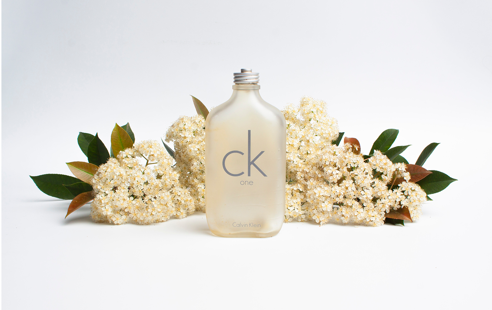
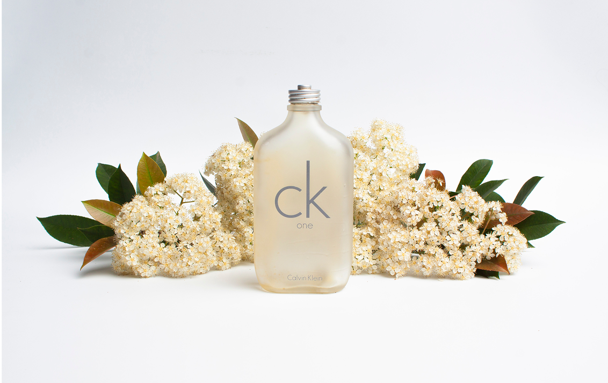

 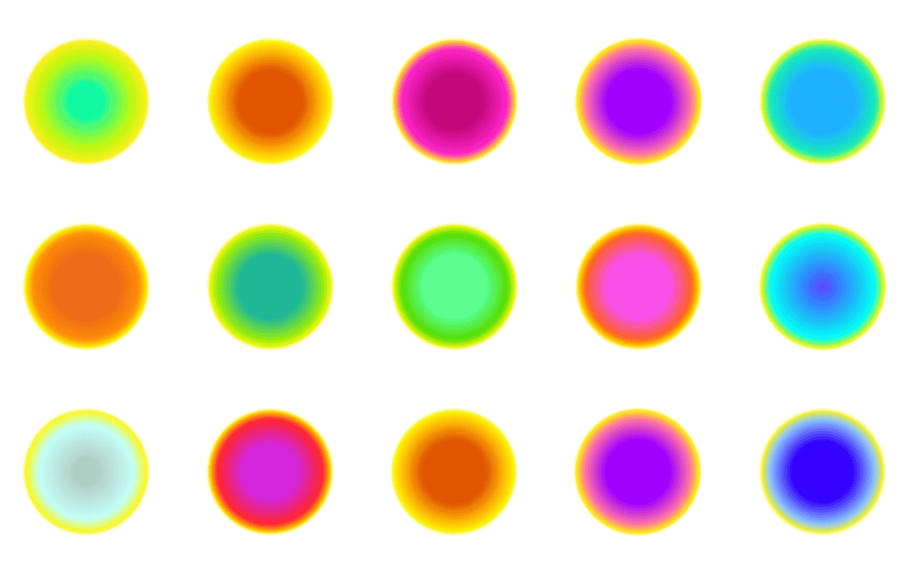
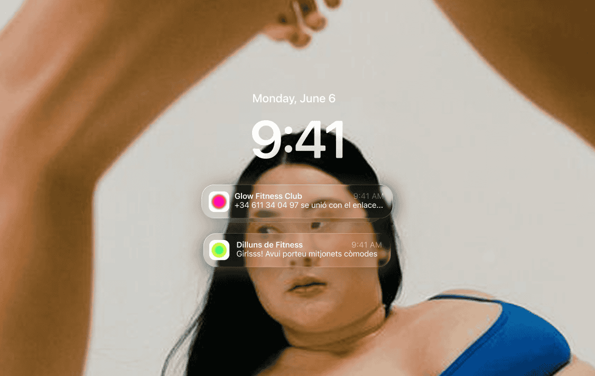
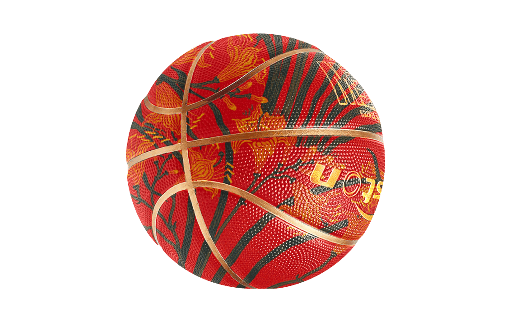
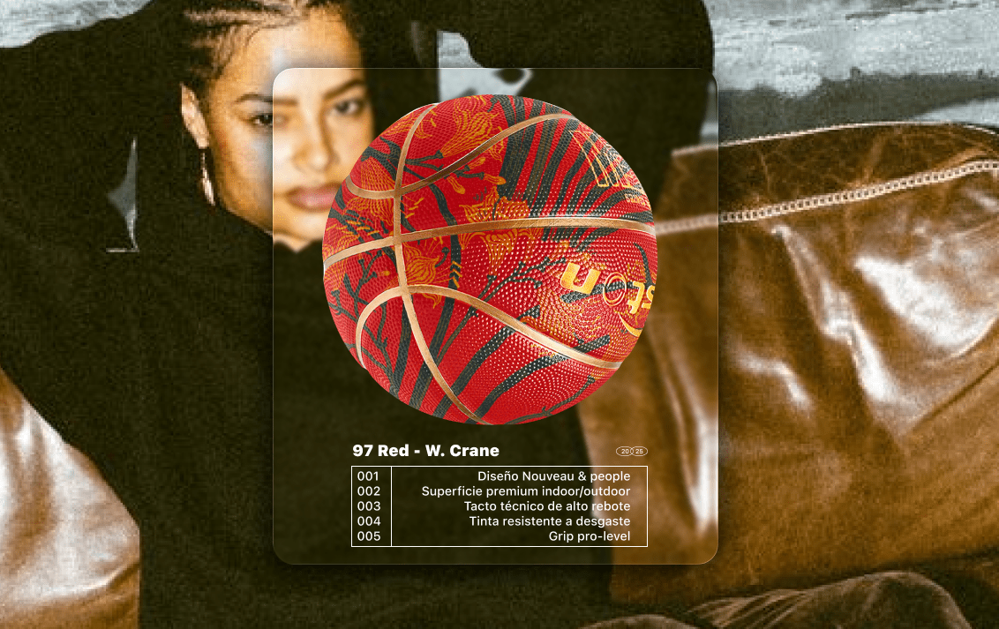
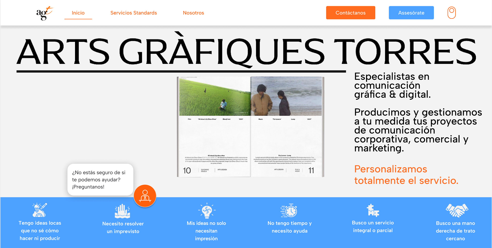
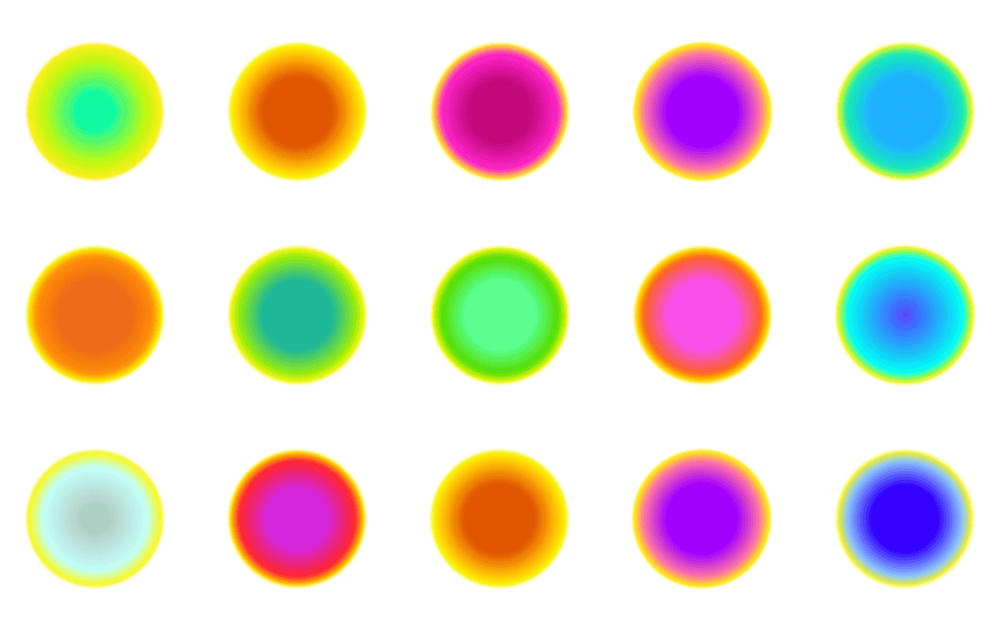
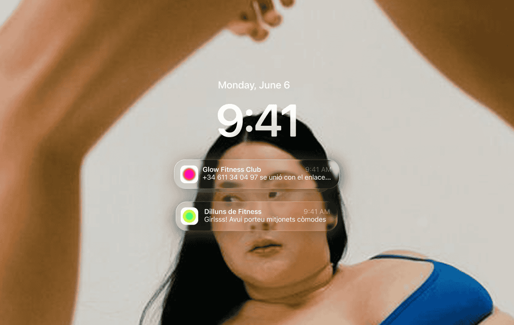
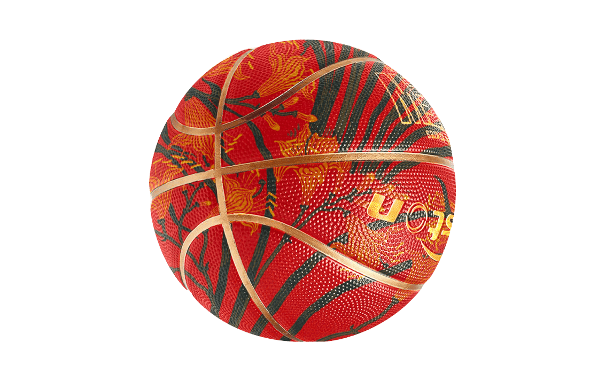
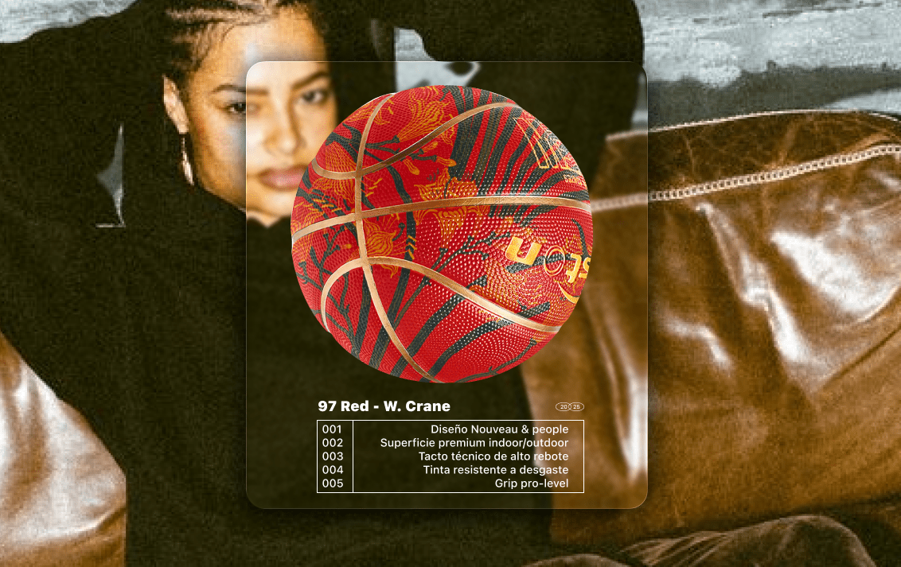
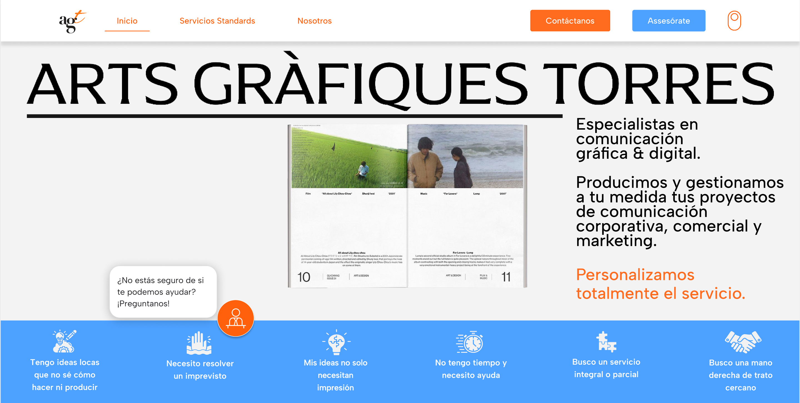